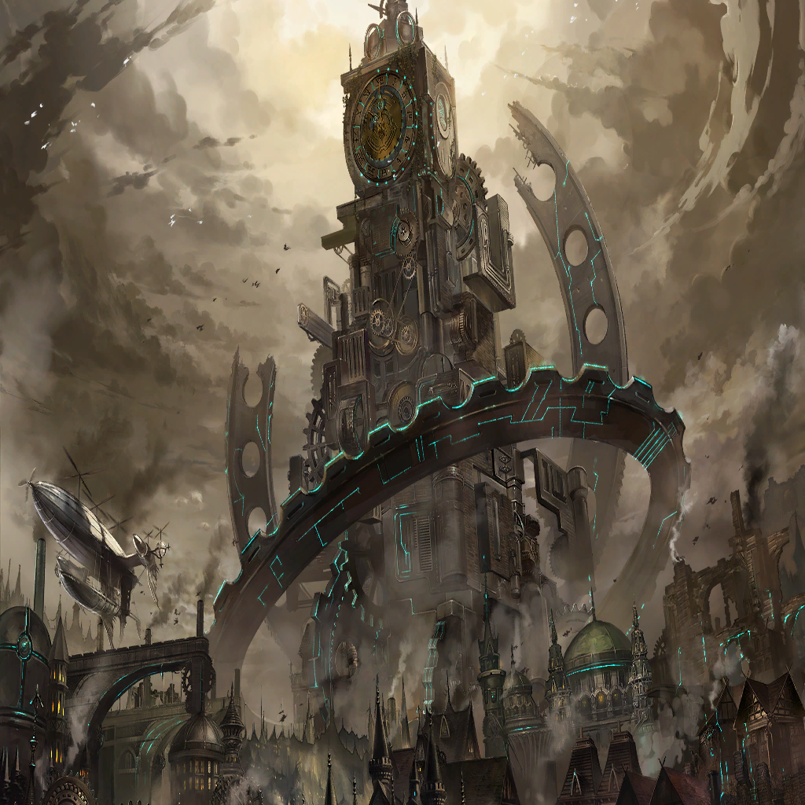

|
 |
|
The more dramatic the stage, the less interested I become. |
|
This world doesn't let people fix their mistakes in life. |
Zehn |
Then what of us Templars? Are we simply gnats, unable to consider the needs of the world? |

Zahar |
Hmph. Have you affiliated yourself with yet another group? You are a man without honor. |

Spica |
Yet another...? |
Zahar |
That man was once a comrade in arms of mine...as a part of the Shadow Messiah. |
|
A man without honor, huh? |
Zahar |
A fool can never be more than a fool. |
Zehn |
You dare—? |
Zahar |
A ruler needs to have the eyes to perceive what lies ahead, and use will and reason to guide the world down the right path. |
Zahar |
Hmph. Perhaps this is too much for someone who can only handle killing things that are right in front of them. |
Zahar |
After all, you seem to have subordinated yourself to scum like the Greed Dike emperor. It's pathetic how content you are to be little more than one of his chess pieces. |
|
He often called me a fool, a murderer, and a lowly chess piece. |
Zehn |
Are your last words finally coming to an end, Zahar? It's time for you to return to hell, old friend! |
Spica |
Lord Zahar! No! |
Zahar |
Wha...? |
Zehn |
What do you think you're doing? |

Cadanova |
I believe that it's the heart that determines victory and defeat on the battlefield. |
Zehn |
And...? |
Cadanova |
I cannot explain it, except that seeing Zahar like this has forced me to reconsider where I stand in this moment. |
Cadanova |
We share the same goal, supposedly... Yet I find myself unable to bear witness to this. |
|
Once unshakeable of spirit... |

Kanon |
This is the vow I made, and I swore never to turn my back on it! |
Kanon |
I could never lose to someone who has given up on their own heart, and everything they believe in! |
|
I became a deserter of my own heart. |
Zehn |
The blade is...shuddering? |
| ??? |
Swords are more than just weapons. They carry within them the legacy our hearts most want to leave behind. |
Zehn |
You...! |

Miuna |
Not just those of the wielder, but also of the maker... I can hear the sadness contained in that blade. It remembers the heart of my father and suffers. |
Spica |
Miss...Miuna...? |
Zehn |
You're...Yogi Ku's... |
|
| Yogi |
I'm not forgin' a sword for you. |
|
Even my blade wept to see me fall. |
|
I had no one. |
|  |
| Plot Device |
Like a sword without a blade to bear, ever do I arrive a day after the fair. |
| Plot Device |
Where there is a will, they say, yet I have all but lost my way. |
| Plot Device |
Cry for peace in the depths of hell, yet only demons will heed thine yell. |
| Plot Device |
But in this world, effort reaps reward. Some would yet restore your lost horde. |
 |
| Plot Device |
When the curtain rises, and the gong sounds, the story of the would-be samurai shall be unwound. |
| Plot Device |
I am not destined to play the part of the hero. |
 |

Orion |
I am strength. |
|
Greed Dike Royal Castle, Dynam Dionysus |
Orion |
You have been selected from among the many fine soldiers who protect our proud nation to serve at my side. You are to be elite tools at my disposal. |
Greed Dike Soldier |
Yes, my lord! It is an honor! |
Orion |
As such, you may consider yourselves no longer bound by laws or reason. To protect our empire, our nation home, you will annihilate our enemies with impunity. |
Orion |
You would do well to please me, for you are mine to command...my Intelligencers. |
| ??? |
Emperor Orion, if I could beg but a moment of your time... |
| Imperial Aide |
The audience has ended. Off with you! |
| ??? |
Do you remember me, my lord? |
Orion |
Excuse me? You dare test me, whelp? |
| Imperial Aide |
B-begone with you, I say! |
| ??? |
I am a patriot at heart, you see. As such... |
| ??? |
I cannot condone your rule, Emperor Orion. |
Orion |
Is that so? |
| Imperial Aide |
A-apologize at once! If you value your head, you will retract that comment immediately! |
| ??? |
No. I don't think I will, thank you. |
| Imperial Aide |
You would throw the honor you have just been given back in our benevolent emperor's face?! |
| ??? |
Yes. I would. |
Orion |
Hmph. |
Greed Dike Soldier |
P-please don't let this fool's insolence ruin the occasion, my lord! We are your faithful servants! We— |
Orion |
Go on. |
| Imperial Aide |
M-my lord? |
Orion |
Tell me your name, whelp. |
Na Zhu |
Na Zhu. You would do well to remember it. |
Orion |
Hahaha! Very well. Is there anything else you would like to tell me? |
Na Zhu |
Yes. Your attitude appalls me. |
| Imperial Aide |
E-e-excuse me?! |
Na Zhu |
As a soldier who fights for a love of his country, I abhor the idea of operating as one of your tools. |
Greed Dike Soldier |
Do you have a death wish?! You do realize that challenging our emperor is tantamount to—?! |
| Imperial Aide |
W-would somebody get this upstart out of here?! He is a disgrace to our emperor! He is a disgrace to us all! |
Orion |
I like that look in your eyes, Na Zhu. |
| Imperial Aide |
Hmph. |
Orion |
In time, I am sure the fiery spirit and ambition that dwell within would have tempered your strength, transforming your iron will into one of steel. |
Orion |
But I very much doubt that misplaced heart of yours will still be beating when I'm through with you. |
Na Zhu |
I always did enjoy a challenge. |
Orion |
You will atone for your impudence in blood. |
 |
|
Greed Dike, Imperial Hinterlands |
| ??? |
'Scuse me. |
| Anti-Imperial Faction Soldier B |
What?! |
| ??? |
You wouldn't happen to be hardline supporters of the false royals, would you? |
| Anti-Imperial Faction Soldier A |
Who are you? State your business! |
| ??? |
Oh, no one special. |
| Plot Device |
A life marked by him will not survive the day. One sweep of metal, and their lifeblood will drain away. |
| ??? |
Just the head of Imperial Security. |
| Anti-Imperial Faction Soldier A |
Wh-what?! |
| Plot Device |
His name is a whisper on the lips of the dead. |
| Anti-Imperial Faction Soldier B |
I-I've heard of him! A warrior, born and bred in Greed Dike, but he wields a blade native to Wadatsumi... A katana, I believe it's called. |
| Anti-Imperial Faction Soldier A |
He's the emperor's dog, that's what he is! At high noon, he comes for the necks of anti-imperialists! |
| Anti-Imperial Faction Soldier B |
Wait—don't tell me he's...?! |
| Plot Device |
Yet even in death they invoke D. Lily with dread. |
| D. Lily |
You've got it. |
| Anti-Imperial Faction Soldier B |
If you're the head of Imperial Security, why're you wearing those foreign clothes? I suppose you don't have any decency, being one of Orion's tools! |
| Anti-Imperial Faction Soldier A |
Traitorous scum! |
| D. Lily |
Heh. |
| Anti-Imperial Faction Soldier B |
You're no better than a dagger, or a lowly mutt! I'm not afraid of you! |
| Plot Device |
He is a tool, this is no lie; he has no loyalties under the sky. |
| D. Lily |
This isn't personal. I'm just here to fulfill my duty. |
| Anti-Imperial Faction Soldier A |
Your duty? How dare you act so high and mighty! As if soaking the streets in rivers of innocent blood is going to do anything for this country! |
| D. Lily |
Like I said... |
| D. Lily |
I'm just doing my duty. |